Pair & Connect Your TaoTronics Speaker with Your Windows 7 Computer
mportant: Make sure to disconnect your audio cable from both your speaker and computer before attempting to pair via Bluetooth
Please note: You may need to update your computer's Bluetooth driver before attempting to pair and connect to your TaoTronics speaker. which does not require a special driver itself and there is no driver for it. Bluetooth drivers must come from the specific manufacturer for your exact computer model. Download and install the appropriate Bluetooth driver from the computer vendor's website, then
restart your system before attempting to pair and connect to your TaoTronics speaker.Click on the Windows icon (located on the far left of the toolbar) and the Start menu will pop up. Next. click on "Control Panel" (located on the right side of the Start menu) and the Control Panel window will appear. Drag down the notification bar from the top of your screen. Next. tap the Settings icon (located on the top right of the notification bar). This will take you to the Settings page.
Type "Bluetooth" in the search bar of the Control Panel window (located on the top right of the window).
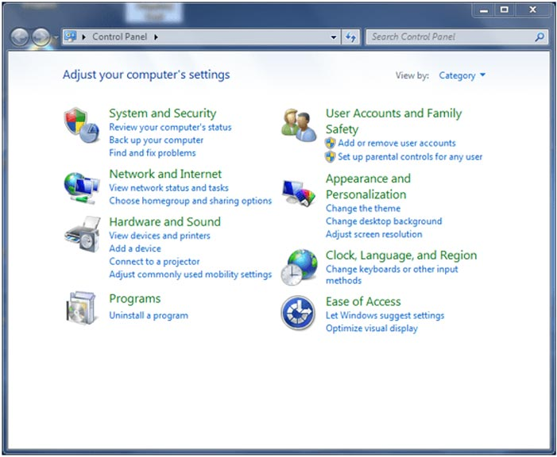
You will see a listing for "Devices and Printers" once you type in "Bluetooth. Under "Devices and Printers" click on "View devices and printers".
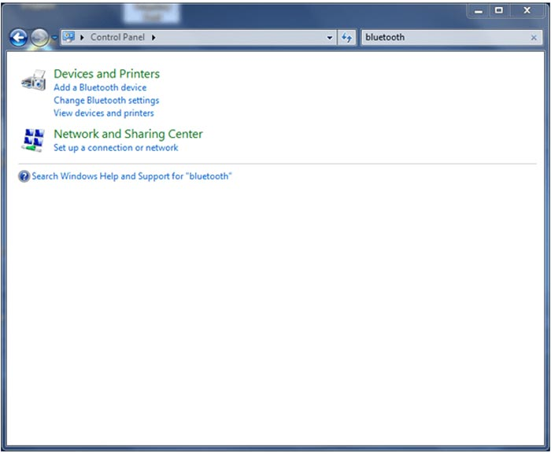
Click on "Add a device" (located on the top left of the window). Now. turn on your TaoTronics Speaker.Take TaoTronics TT-SK06 as an example. The Bluetooth LED Light will flash blue quickly to indicate that the speaker is in pairing mode. If solid blue. your speaker is already paired to a source device; you will need to press and hold the multi-functional button (or Bluetooth Button) on your TaoTronics Speaker for 1 seconds until your speaker is in pairing mode. ready to pair and connect.
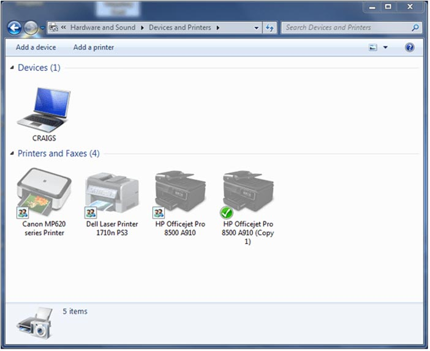
The "Add a device" pop up window will appear and you should see a listing for your TaoTronics Speaker. Double click on your speaker and wait patiently as your computer adds your speaker.
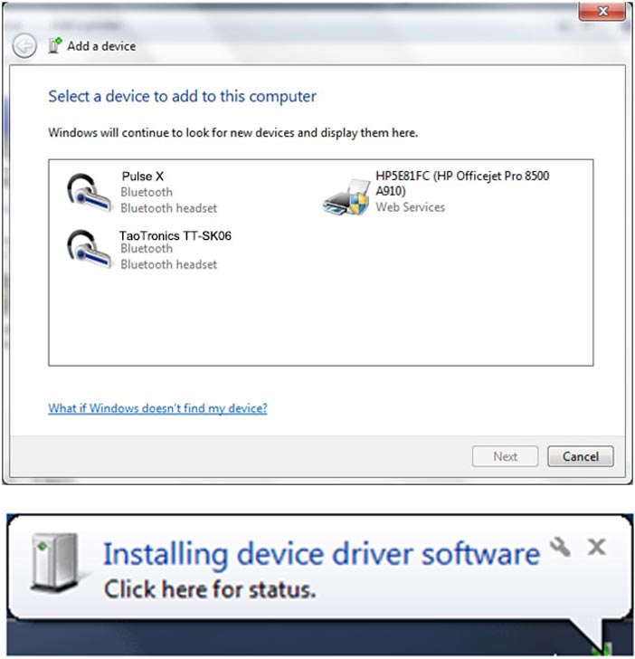
Once your TaoTronicsSpeaker has been added to your computer. you should see this message:
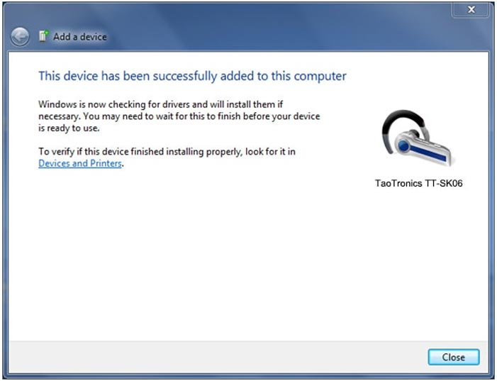
Exit out of the "Add a device" window and return to the "Devices and printers window" which should already be open on your computer. Double click on your speaker and the "Bluetooth Device Operations and Settings" window will appear.
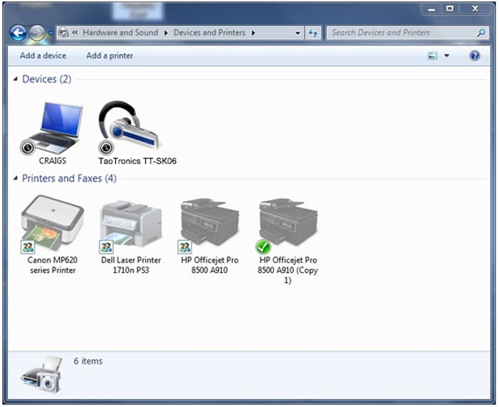
Now that your speaker has been added to your computer, the next step is to connect it so you can listen to music. Click on "Listen to Music" (located in the middle of the window) and wait patiently as your computer connects to your speaker. This may take a few minutes.
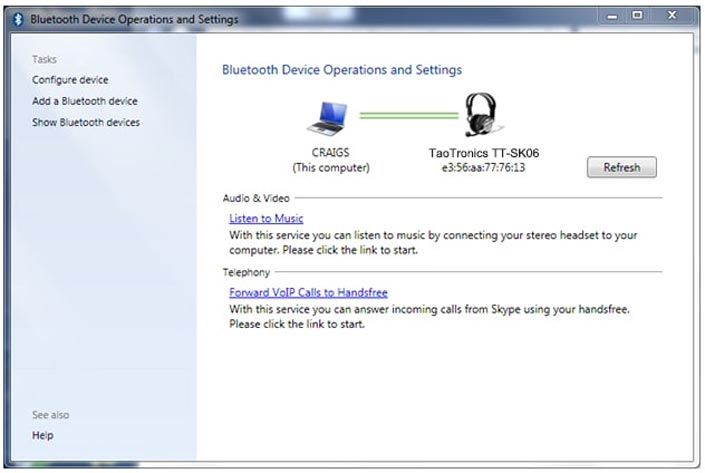
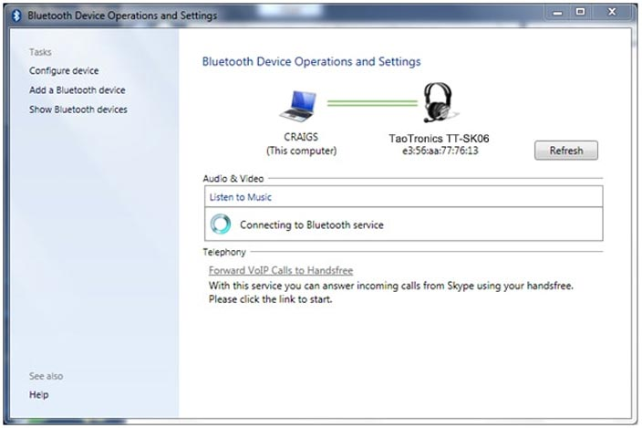
You will see a message that says "Bluetooth connection established." You have now paired and connected your TaoTronics Speake to your computer.
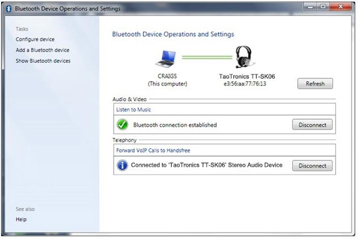
The next step is to select the TaoTronics Speaker as your audio playback device. By doing this, you will switch from your internal or default speakers (your built in laptop speakers. for example) and be able to use your TaoTronics Speaker to play audio. instead.
Right click the Sound Icon (located on the right side of the desktop toolbar) and click "Playback Devices" from the drop down menu:
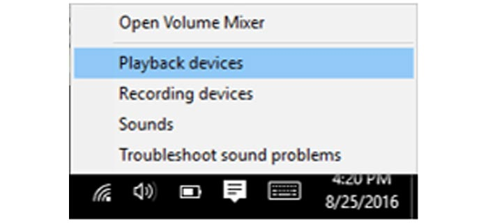
The Sound pop up window will now appear. If your TaoTronics Speaker is currently connected to your computer. it will appear as "Speakers" in this window.
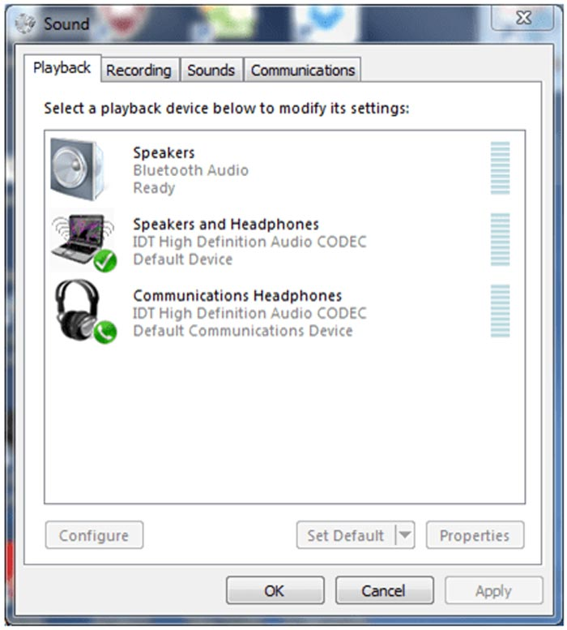
Click on the "Speakers" listing on the list of devices. Then, click "Set Default" on the bottom right of the Sound pop up window.
Your TaoTronics Speaker will now be able to play audio via Bluetooth from your device. Click the "OK" button at the bottom of the Sound pop up window and you're ready to go:
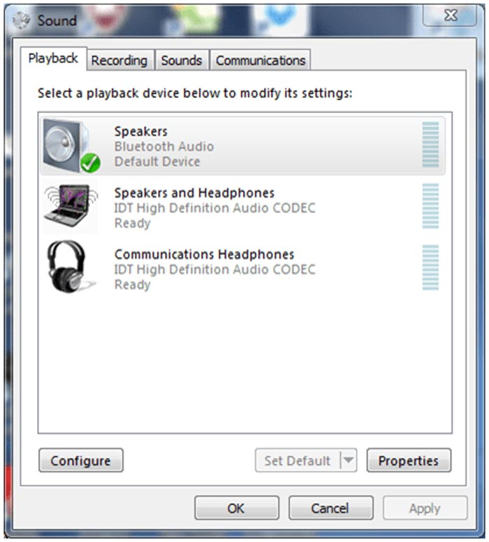
Please note: If you are experiencing difficulty with connecting to your TaoTronics Speaker. you may need to unpair the speaker from your device and restart the connection process.